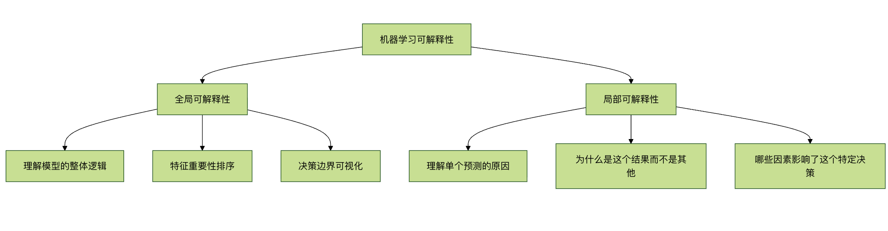
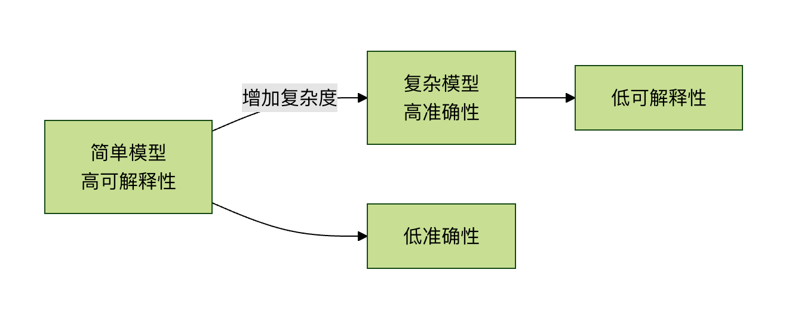

解釈可能性の問題
想像してみてください。あなたは医者に行き、医者がこう言います。「私の高度な診断システムによると、あなたはこの手術を受ける必要があります。しかし、なぜなのかは説明できません。」あなたは同意しますか？ほとんどの人はためらうでしょう。なぜなら、私たちは決定の背後にある理由を理解したいからです。
機械学習の分野でも、私たちは同様のジレンマに直面しています。多くの高度な機械学習モデル、特に深層学習モデルは、まるでブラックボックスのようなものです。入力と出力は見えても、内部でどのように決定が行われているのかを理解するのは困難です。これが機械学習の解釈可能性の問題であり、AI技術が医療、金融、司法などの実際の重要分野で広く応用されることを妨げる主要な障壁の一つとなっています。
本記事では、解釈可能性とは何か、なぜそれがそれほど重要なのか、そして現在直面している課題と解決策について解説します。
機械学習の解釈可能性とは？
基本概念
機械学習の解釈可能性とは、AIの意思決定プロセスを理解し、信頼し、効果的に管理できる能力を指します。
簡単に言えば、「このモデルはなぜこのような予測をしたのか」に答える能力です。
解釈可能性の2つの側面

全体（グローバル）解釈可能性モデルの全体的な振る舞いに注目します：
- モデルはどのような規則を学習したのか？
- どの特徴量が予測に最も重要か？
- モデルの決定境界はどのような形状か？
局所（ローカル）解釈可能性個々の予測に注目します：
- なぜこのサンプルはBクラスではなくAクラスと予測されたのか？
- ある特徴量の値が少し変わったら、予測はどう変わるのか？
- この特定の予測に最も貢献した特徴量はどれか？
なぜ解釈可能性はそれほど重要なのか？
1. 信頼と透明性の構築
医療、自動運転、金融リスク管理などの高リスク分野では、人々はAIの意思決定の根拠を知る必要があります。モデルがローンの申し込みを拒否したり、病気を診断したりする場合、その理由を説明できなければなりません。
2. 規制要件の充足
EUのGDPR（一般データ保護規則）は、ユーザーが「ロジックに関する有意義な情報」を得る権利を明確に定めています。多くの業界規制も、意思決定プロセスの透明性を要求しています。
3. モデルのデバッグと改善
モデルがどのように機能するかを理解することで、以下のことが可能になります：
- モデル内の偏りを発見し、修正する
- モデルが学習した見せかけの相関関係を特定する
- モデルアーキテクチャと特徴量エンジニアリングを改善する
4. 知識発見と科学的洞察
時には、モデルが人間の専門家も気づかなかったパターンを発見することがあります。そうした洞察は科学の進歩を促す可能性があります。
5. セキュリティと敵対的攻撃
モデルの弱点を理解することは、敵対的攻撃（巧妙に設計された入力によってモデルが誤分類すること）への防御に役立ちます。
異なるタイプのモデルと解釈可能性
モデルの透明性スペクトラム
| モデルの種類 | 解釈可能性 | 代表例 | 適用シナリオ |
|---|---|---|---|
| 解釈可能性が高いモデル | 高 | 線形回帰、決定木、ロジスティック回帰 | 強い説明可能性が求められる分野（例：金融融資） |
| 中程度の解釈可能性を持つモデル | 中 | ランダムフォレスト、勾配ブースティング木 | 性能と説明可能性のバランスを取るシナリオ |
| 解釈可能性が低いモデル | 低 | 深層学習、複雑なアンサンブルモデル | 性能を優先する場合（例：画像認識、自然言語処理） |
例の比較：決定木 vs ニューラルネットワーク
決定木（解釈可能性が高い）の例：
例
from sklearn.tree import DecisionTreeClassifier, plot_tree
import matplotlib.pyplot as plt
# モデルを作成してトレーニングする
model = DecisionTreeClassifier(max_depth=3, random_state=42)
model.fit(X_train, y_train)
# 決定木を可視化する
plt.figure(figsize=(12, 8))
plot_tree(model, feature_names=feature_names,
class_names=['Not Approved', 'Approved'],
filled=True, rounded=True)
plt.title("ローンの審査決定木 - 完全に解釈可能")
plt.show()
決定木の利点は、ルートノードからリーフノードまでの経路を直接たどることで、各決定がどのように行われたかを完全に理解できることです。
ニューラルネットワーク（解釈可能性が低い）の例：
例
import tensorflow as tf
from tensorflow import keras
# シンプルなニューラルネットワークを作成する
model = keras.Sequential([
keras.layers.Dense(128, activation='relu', input_shape=(10,)),
keras.layers.Dense(64, activation='relu'),
keras.layers.Dense(32, activation='relu'),
keras.layers.Dense(1, activation='sigmoid') # 二値分類の出力
])
model.compile(optimizer='adam',
loss='binary_crossentropy',
metrics=['accuracy'])
# モデルをトレーニングする
history = model.fit(X_train, y_train,
epochs=50,
validation_split=0.2,
verbose=0)
ニューラルネットワークは、数百から数百万もの相互接続されたニューロンで構成され、各接続には重みがあり、これらの重みはトレーニングによって自動的に調整されます。すべての重みの値を確認することはできますが、これらの数値がどのように組み合わさって特定の予測を生み出すのかを理解することはほぼ不可能です。
解釈可能性が直面する課題
1. 精度と解釈可能性のトレードオフ
通常、モデルが複雑で性能が高いほど、解釈可能性は低くなります。これは精度-解釈可能性トレードオフ。

2. 技術的複雑さ
深層学習モデルには、以下のようなものがあります：
- 数百万のパラメータ
- 複雑な非線形変換
- 多層の抽象表現
3. 人間の認知の限界
たとえ技術的な説明を得られたとしても、人間の理解能力を超えている場合があります。例えば、1000の特徴量を含む複雑な交互作用の説明は、人間の脳には処理が困難です。
4. 評価基準の欠如
説明の「良し悪し」をどう評価するのか？現在、統一された客観的な評価基準が不足しています。
現在の解釈可能性技術
1. 特徴量重要度分析
例
import shap
import xgboost as xgb
import matplotlib.pyplot as plt
# XGBoostモデルをトレーニングする
model = xgb.XGBClassifier()
model.fit(X_train, y_train)
# SHAP explainerを作成する
explainer = shap.TreeExplainer(model)
shap_values = explainer.shap_values(X_test)
# 特徴量重要度を可視化する
shap.summary_plot(shap_values, X_test, plot_type="bar")
plt.title("特徴量重要度のランキング")
plt.show()
# 単一予測の説明
shap.force_plot(explainer.expected_value, shap_values[0,:], X_test.iloc[0,:])
SHAP（SHapley Additive exPlanations）はゲーム理論に基づき、各特徴量に重要度の値を割り当て、その特徴量が予測に与える貢献を示します。
2. LIME（局所的に解釈可能なモデル非依存の説明）
例
import lime
from lime import lime_image
from skimage.segmentation import mark_boundaries
# LIME explainerを作成する
explainer = lime_image.LimeImageExplainer()
# 単一の画像予測を説明する
explanation = explainer.explain_instance(
image_array,
model.predict,
top_labels=3,
hide_color=0,
num_samples=1000
)
# 予測を支持する領域を表示する
temp, mask = explanation.get_image_and_mask(
explanation.top_labels[0],
positive_only=True,
num_features=5,
hide_rest=False
)
plt.imshow(mark_boundaries(temp, mask))
plt.title("画像内で予測を支持する領域")
plt.axis('off')
plt.show()
LIMEの核となる考え方は、単一の予測点の周辺で、複雑なモデルの振る舞いを近似するシンプルで解釈可能なモデル（線形モデルなど）を作成することです。
3. アテンション機構
自然言語処理では、アテンション機構によって、モデルが予測を行う際に入力テキストのどの部分に「注目」しているかを表示できます：
例
import numpy as np
import matplotlib.pyplot as plt
def visualize_attention(text, attention_weights):
"""
アテンションの重みを可視化する
パラメータ：
text: 分かち書きされたテキストのリスト
attention_weights: 各単語のアテンションの重み
"""
fig, ax = plt.subplots(figsize=(10, 2))
# ヒートマップを作成する
im = ax.imshow([attention_weights], cmap='YlOrRd', aspect='auto')
# 軸を設定する
ax.set_xticks(range(len(text)))
ax.set_xticklabels(text, rotation=45, ha='right')
# カラーバーを追加する
plt.colorbar(im)
plt.title(注意重みの可視化)
plt.tight_layout()
plt.show()
# 使用例
sample_text = [私, 好き, 機械学習, の, 解釈可能性, 研究]
sample_attention = [0.1, 0.15, 0.4, 0.05, 0.25, 0.05]
visualize_attention(sample_text, sample_attention)
4. 決定境界の可視化
低次元データの場合、モデルの決定境界を直接可視化できます：
例
import numpy as np
import matplotlib.pyplot as plt
from sklearn.linear_model import LogisticRegression
def plot_decision_boundary(model, X, y):
"""
2次元データの決定境界を描画する
パラメータ：
model: 学習済みの分類器
X: 特徴データ（2次元）
y: ラベル
"""
# グリッドを作成
x_min, x_max = X[:, 0].min() - 0.5, X[:, 0].max() + 0.5
y_min, y_max = X[:, 1].min() - 0.5, X[:, 1].max() + 0.5
xx, yy = np.meshgrid(np.arange(x_min, x_max, 0.02),
np.arange(y_min, y_max, 0.02))
# グリッド全体を予測
Z = model.predict(np.c_[xx.ravel(), yy.ravel()])
Z = Z.reshape(xx.shape)
# 決定境界と散布図を描画
plt.figure(figsize=(10, 8))
plt.contourf(xx, yy, Z, alpha=0.4, cmap=plt.cm.RdYlBu)
plt.scatter(X[:, 0], X[:, 1], c=y, s=50,
edgecolor='k', cmap=plt.cm.RdYlBu)
plt.xlabel('特徴 1')
plt.ylabel('特徴 2')
plt.title('決定境界の可視化')
plt.show()
# サンプルデータを生成してモデルを訓練
np.random.seed(42)
X = np.random.randn(200, 2)
y = (X[:, 0] + X[:, 1] > 0).astype(int) # シンプルな線形決定境界
model = LogisticRegression()
model.fit(X, y)
plot_decision_boundary(model, X, y)
実践的なアドバイス：プロジェクトで解釈可能性の問題にどう取り組むか
1. 適用シナリオに応じて戦略を選択する
| アプリケーションシナリオ | 解釈可能性のニーズ | 推奨方法 |
|---|---|---|
| 医療診断 | 非常に高い | 解釈可能性の高いモデルを使用するか、複雑なモデルに事後説明を追加する |
| 金融リスク管理 | 高 | 特徴重要度分析、決定ルールの抽出 |
| レコメンドシステム | 中程度 | 注意メカニズム、おすすめ理由の生成 |
| 画像認識 | 比較的低い | 顕著性マップ、活性化の可視化 |
| 研究探索 | 可変 | 具体的な研究課題に応じて選択 |
2. 解釈可能性を実装する手順
例
class ExplainableMLPipeline:
def __init__(self, model, feature_names):
self.model = model
self.feature_names = feature_names
self.explanations = {}
def add_global_explanation(self, method='shap'):
"""グローバルな説明を追加"""
if method == 'shap':
explainer = shap.TreeExplainer(self.model)
shap_values = explainer.shap_values(self.X)
self.explanations['global_shap'] = shap_values
# 特徴重要度の図を生成
shap.summary_plot(shap_values, self.X,
feature_names=self.feature_names)
def add_local_explanation(self, instance_index, method='lime'):
"""ローカルな説明を追加"""
if method == 'lime':
# ここでは簡略化して示している。実際はモデルの種類に応じて説明器を選択する必要がある
print(f"インスタンス {instance_index} の予測説明:")
print(f"予測値: {self.model.predict([self.X[instance_index]]))
print("主な影響要因:")
# 最も重要な特徴とその貢献度を表示
def generate_report(self):
"""解釈可能性レポートを生成"""
report = {
'model_type': type(self.model).__name__,
'global_importance': self.get_feature_importance(),
'sample_explanations': self.get_sample_explanations(3),
'fairness_metrics': self.check_fairness()
}
return report
def get_feature_importance(self):
"""特徴重要度を取得"""
# 特徴重要度の計算を実装
pass
def check_fairness(self):
"""モデルの公平性をチェック"""
# 公平性チェックを実装
pass
3. 実用的なチェックリスト
機械学習モデルをデプロイする前に、次の質問をしましょう：
技術レベル
- モデル全体のロジックを説明できますか？
- 個々の予測を説明できますか？
- どの特徴が予測に最も影響していますか？
- モデルは見せかけの相関に依存していませんか？
倫理とコンプライアンスのレベル
- モデルに偏見はありませんか？どのグループに対して？
- 関連する法規制の要件を満たしていますか？
- ユーザーは意味のある説明を得られますか？
- 誤った予測を修正する仕組みはありますか？
実用レベル
- 説明は分野の専門家が理解できるものですか？
- 説明はモデルの改善に役立ちますか？
- 説明は意思決定をサポートしますか？
- 重要な決定の説明は記録されていますか？
将来の展望と研究の方向性
1. 本質的に解釈可能なモデルの発展
研究者たちは、強力かつ解釈可能な新しいモデルアーキテクチャを開発しています。例：
- ニューロシンボリックシステム：ニューラルネットワークと学習ルールを組み合わせる
- 解釈可能なニューラルネットワーク：透明な構造を持つネットワークを設計する
- カプセルネットワーク：より良い階層的表現を提供する
2. 標準化と評価フレームワーク
業界には以下が必要です：
- 解釈可能性評価の標準化された指標
- 説明品質の客観的な測定方法
- 異なる説明方法の一貫性検証
3. 人と機械の協働による説明システム
将来のシステムは以下の可能性があります：
- ユーザーの背景に応じて異なるレベルの説明を提供する
- インタラクティブな探索と質問をサポートする
- ドメイン知識を組み合わせてより意味のある説明を生成する
4. 解釈可能性の自動化
ツールの発展方向：
- 最適な説明方法を自動的に選択する
- パフォーマンスに過度に影響を与えずにリアルタイムで説明を生成する
- 説明のパーソナライズ適応
まとめと核心ポイント
解釈可能性は選択肢ではない：高リスク分野では、解釈可能性はAIシステムを展開するための必須条件です。
トレードオフは現実的です：精度と解釈可能性の間で、アプリケーションシナリオに応じて賢明なトレードオフを行う必要があります。
ツールボックスは豊富です：SHAP、LIMEから注意メカニズムまで、モデルの解釈可能性を高めるためのさまざまな技術があります。
プロセスは体系的です：解釈可能性は、データ収集からモデルデプロイメントまで、機械学習ライフサイクル全体を通じて考慮されるべきです。
未来は明るいです：研究が進むにつれて、強力かつ解釈可能な新しい手法を開発しています。
初心者へのアドバイス
機械学習の初心者であれば：
- 解釈可能なモデルから始めましょう：まず線形回帰、ロジスティック回帰、決定木などの解釈可能なモデルを習得しましょう
- 基礎を理解してから上級へ：単純なモデルの仕組みを理解した後に、複雑なモデルを学びましょう
- 説明技術を実践しましょう：SHAP、LIMEなどのツールを使って自分のモデルを説明しましょう
- 批判的思考を育てましょう：常に「なぜモデルはこのように予測するのか？」と問いかけましょう
機械学習の解釈可能性は技術的な問題であるだけでなく、人工知能と人間の信頼をつなぐ架け橋です。技術の進歩に伴い、私たちはより透明で信頼できるAIシステムへと前進しており、これにより機械学習はより多くの重要な分野で重要な役割を果たすでしょう。
実践演習
演習1：異なるモデルの解釈可能性を比較する
アヤメのデータセットを使用して、異なるモデルの解釈可能性を比較します：
例
from sklearn.model_selection import train_test_split
from sklearn.linear_model import LogisticRegression
from sklearn.tree import DecisionTreeClassifier
from sklearn.ensemble import RandomForestClassifier
import shap
# データを読み込む
iris = load_iris()
X_train, X_test, y_train, y_test = train_test_split(
iris.data, iris.target, test_size=0.2, random_state=42
)
# 異なるモデルを訓練する
models = {
'ロジスティック回帰': LogisticRegression(max_iter=1000),
'決定木': DecisionTreeClassifier(max_depth=3),
'ランダムフォレスト': RandomForestClassifier(n_estimators=100)
}
# 各モデルに対して説明を生成して比較する
for name, model in models.items():
model.fit(X_train, y_train)
accuracy = model.score(X_test, y_test)
print(f"{name} - 正解率: {accuracy:.3f}")
# 説明を試みる（ここでは特徴重要度を例とする）
if hasattr(model, 'feature_importances_'):
print(f" 特徴重要度: {model.feature_importances_}")
elif hasattr(model, 'coef_'):
print(f" 係数: {model.coef_}")
演習2：SHAPを使用して住宅価格予測モデルを説明する
例
from sklearn.datasets import fetch_california_housing
from sklearn.ensemble import RandomForestRegressor
import shap
import matplotlib.pyplot as plt
# カリフォルニアの住宅価格データセットを読み込む
housing = fetch_california_housing()
X = pd.DataFrame(housing.data, columns=housing.feature_names)
y = housing.target
# モデルを訓練する
model = RandomForestRegressor(n_estimators=100, random_state=42)
model.fit(X, y)
# SHAPを使用して説明する
explainer = shap.TreeExplainer(model)
shap_values = explainer.shap_values(X)
# 1. 特徴重要度のサマリー
plt.figure(figsize=(10, 6))
shap.summary_plot(shap_values, X, plot_type="bar")
plt.title("カリフォルニア住宅価格予測の特徴重要度")
plt.tight_layout()
plt.show()
# 2. 個々の予測の説明
sample_idx = 10 # サンプルを選択する
print(f"サンプル {sample_idx} の実際の住宅価格: ${y[sample_idx]:.2f}千")
print(f"サンプル {sample_idx} の予測住宅価格: ${model.predict([X.iloc[sample_idx]]))
shap.force_plot(explainer.expected_value,
shap_values[sample_idx,:],
X.iloc[sample_idx,:],
matplotlib=True)
クリックしてノートを共有
ノートは本記事の内容を拡張したものである必要があります！
記事投稿は、こちらをクリック
登録招待コードの取得方法
ノートを共有する前に、ログインが必要です！
登録招待コードの取得方法